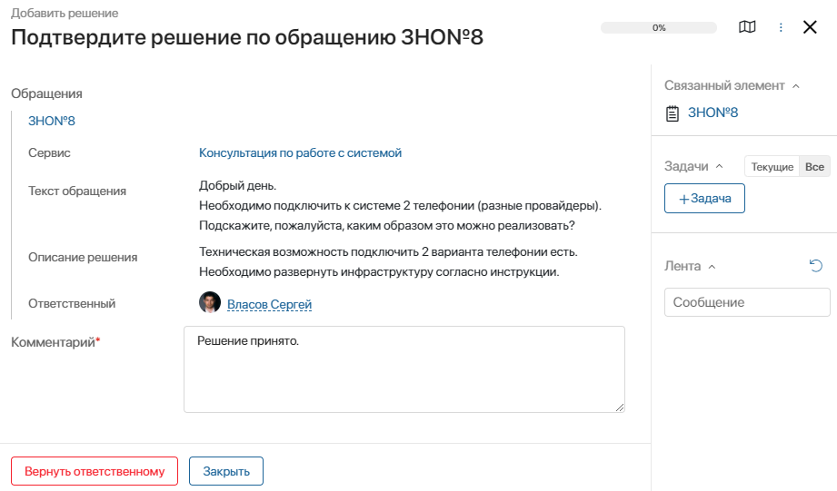

Назначить обращение
Работа с обращением начинается с назначения оператора. Это можно сделать несколькими способами:
- обращение может назначить супервизор ServiceDesk. Для этого нужно открыть карточку обращения, нажать кнопку Назначить ответственного и выбрать сотрудника. Либо в карточке обращения справа на панели указать сотрудника в блоке Ответственный, нажав ;
- оператор может самостоятельно взять обращение в работу. Для этого нужно открыть карточку обращения и нажать кнопку Взять в работу. Далее можно добавить комментарий и подтвердить действие.
Существует также возможность настроить маршрутизацию обращений. Это может сделать администратор системы. Например, в демоконфигурации ServiceDesk настроено автоматическое назначение обращений на ответственного за сервис, по которому создано обращение. Подробнее о маршрутизации читайте в статье «Настройка ServiceDesk».
Обработать обращение
Обращения обрабатываются в соответствии с преднастроенными бизнес-процессами. Они отображаются в разделе Администрирование > Бизнес-процессы > ServiceDesk > Обращения. Подробнее об этом читайте в разделе справки «Дизайнер бизнес-процессов».
Добавить решение по обращению
После того как оператор взял обращение в работу и нашёл решение по нему, нужно зафиксировать решение в системе.
Для этого выполните следующие действия:
- Откройте карточку обращения и нажмите внизу окна кнопку Добавить решение.
- В открывшемся окне укажите подробную информацию о том, как запрос клиента был разрешен. В поле Связанная проблема можно указать проблему, которая уже была зафиксирована. Это может понадобиться, если подобные обращения уже были зафиксированы ранее или появляются систематически. Все зарегистрированные проблемы хранятся в приложении Проблемы.

- При необходимости укажите комментарий, который будет отображаться в карточке обращения.
- Вы можете раскрыть панель Информация по обращению и просмотреть, с каким сервисом связано обращение, от какого клиента оно поступило, и какая проблема возникла.
- Нажмите кнопку Сохранить. Решение будет добавлено в приложение Решения. После этого для обращения будет установлен статус «Решено».
Подтвердить решение
Найденное решение подтверждает и оценивает автор обращения.
Если обращение создал оператор линии или оператор ServiceDesk, он получит задачу подтвердить и оценить решение. В таком случае оператор связывается с клиентом, от которого поступило обращение, и запрашивает у него подтверждение и оценку решения. Полученную информацию нужно зафиксировать в карточке обращения.

Если автором обращения является внешний пользователь портала, он получит задачу принять решение по обращению.
Если автор обращения принимает найденное решение, ему нужно нажать кнопку Закрыть. Далее требуется указать оценку работы по обращению от клиента. Для этого нужно выбрать цифру от 1 до 5, указать комментарий и нажать Закрыть.
Оценка и комментарий отображаются в карточке обращения на вкладке Показатели.
Если найденное решение не подходит и требуется предоставить другое решение, обращение можно вернуть в работу, указав комментарий и нажав кнопку Вернуть ответственному.
Приостановить работу с обращением
Работу с обращением можно временно приостановить. Например, когда оператор ожидает ответа от автора обращения. Для этого оператор должен открыть карточку обращения, нажать кнопку Перевести в ожидание и подтвердить действие. После этого для обращение будет установлен статус «В ожидании», и отсчёт времени, отведённого на работу с обращением, приостановится.
Когда работу с обращением нужно будет продолжить, в его карточке требуется нажать кнопку Снять с ожидания.
Если обращение уже неактуально, можно завершить работу по нему, нажав кнопку В архив.
Добавить обращение в архив
Если оператор обрабатывает обращения со статусами «В ожидании» или «Решено», их можно отправить в архив. Например, это может потребоваться, если обращение уже неактуально или работа по нему завершена.
Для этого нужно открыть карточку обращения и нажать кнопку В архив.
Возобновить работу с обращением
Если решение по обращению добавлено и для него установлен статус «Решено», можно вновь отправить его в работу. Для этого откройте карточку обращения и нажмите кнопку Переоткрыть. Далее укажите оператора и выберите уровень поддержки. Значение выбирается из приложения Уровни поддержки. Здесь можно также добавить новый уровень, нажав кнопку + Создать.
Удалить обращение
Обращение можно удалить. Для этого откройте его карточку и нажмите кнопку Удалить.
Подписаться на обращение
Можно отслеживать изменения, которые происходят при работе с обращением. Оповещения об изменениях отображаются в разделе Сообщения и в карточке обращения на вкладке История. Чтобы получать оповещения, подпишитесь на обращение. Для этого перейдите в его карточку и нажмите на значок . Если вы уже подписаны на обращение, то увидите значок . Нажмите на него, если не хотите отслеживать изменения. По умолчанию оповещения о действиях с обращением получает ответственный.